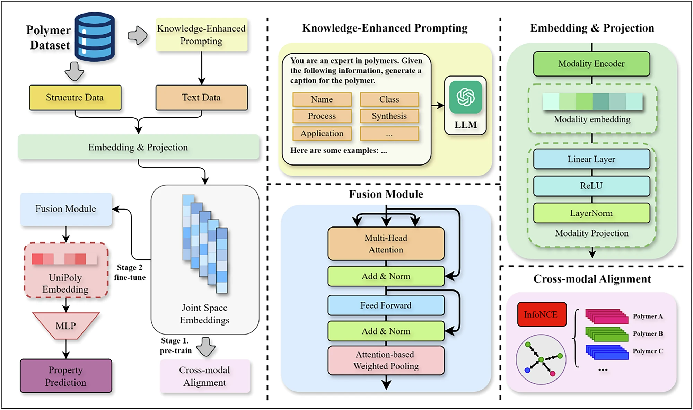
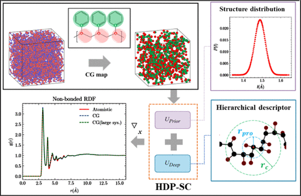
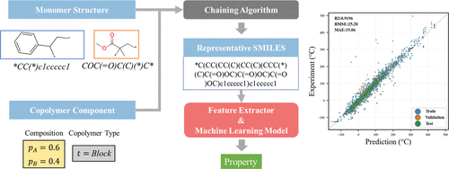
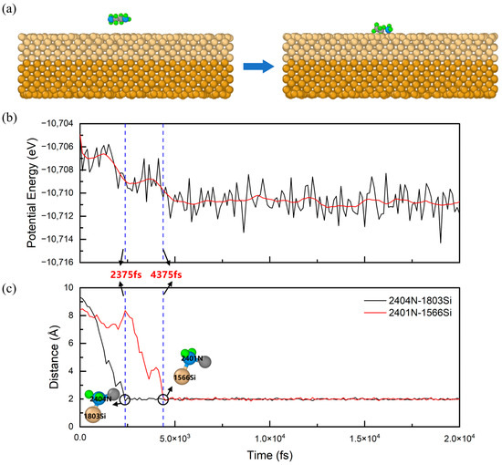

Hi, my name is
Qi Huang.
I build AI for materials science.
I'm a postdoctoral researcher at the Shanghai Institute of Microsystem and Information Technology (SIMIT), Chinese Academy of Sciences, working at the intersection of deep learning, physics-informed modeling, and semiconductor materials.
View Full CVAbout Me

I am a postdoctoral researcher at SIMIT, CAS, working with Prof. Wenjie Yu under the Shanghai Super Postdoc Program. I received my Ph.D. in Microelectronics and Solid-State Electronics from SIMIT, CAS in 2025.
Prior to that, I earned an M.Sc. in Computer Science and Artificial Intelligence from the University of Manchester (2021) and a B.Sc. from the University of Nottingham Ningbo China (2020).
From July 2024 to March 2025, I was a visiting researcher at the RIKEN Center for Advanced Intelligence Project (AIP), Japan, collaborating with Dr. Qibin Zhao.
Here are some technologies I work with:
Research
How can materials be understood by machines?
Materials carry intrinsic properties across modalities and scales that pure data-driven approaches struggle to capture. My work integrates physical mechanisms into representation learning — fusing molecular sequences, graph structures, 3D conformations, and domain knowledge into unified multimodal representations. Physical priors are embedded in downstream tasks such as neural network force fields, pursuing representations that are both interpretable and generalizable.
How can materials R&D be intelligently driven?
Materials development involves a long decision chain spanning literature retrieval, data integration, multi-scale simulation, and process optimization. My work places intelligent agents at the center, orchestrating knowledge graphs, cross-scale simulation tools, predictive models, and process optimizers into an automated pipeline — with integrated circuit materials as the primary application domain.
Experience & Education
Postdoctoral Researcher
Working with Prof. Wenjie Yu on AI-driven materials research. Awarded the Shanghai Super Postdoc Program.
Visiting Researcher
Collaborated with Dr. Qibin Zhao on multimodal representation learning for polymer property prediction.
Ph.D. — Microelectronics & Solid-State Electronics
Doctoral research on physics-informed ML for materials science. Developed neural network force fields, coarse-grained simulation methods, and multimodal polymer representations.
M.Sc. — Computer Science & Artificial Intelligence
B.Sc. — Computer Science
Publications




一种基于多源数据的聚合物统一表征向量生成方法
First inventor. A unified polymer representation vector generation method based on multi-source data.
抛光材料去除率分布预测模型训练方法、预测方法、存储介质和终端
Second inventor. Training and prediction method for polishing material removal rate distribution prediction models.
What's Next?
Get In Touch
I'm always open to discussing research collaborations, academic opportunities, or AI for Science projects. Feel free to reach out — I'll do my best to respond promptly.
Say Hello